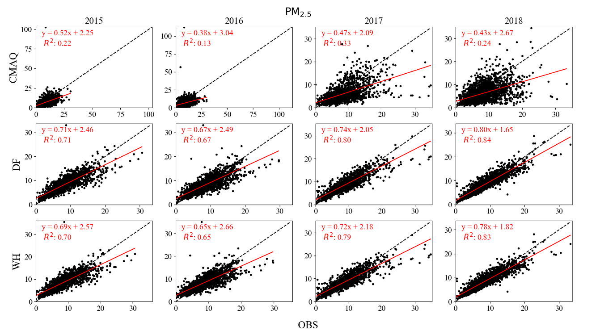

- Coupling fire-behavior model with chemical transport model.
- Estimation of prescribed fire emissions from remote sensing datasets.
- Health impacts of prescribed fires.
- Tradeoffs between wildfires and prescribed fires.
- Deep learning driven prescribed fire forecast system.

Hello, I am Zongrun. I am currently a Georgia Tech PhD student in LAMDA(λ) : Laboratory for Atmospheric Modeling, Diagnostics and Analysis advised by M. Talat Odman and Ted Russell My PhD research topics including:
Zongrun Li
zli867 at gatech.edu
Georgia Tech
Atlanta

Publications
See also Google Scholar
-
Estimated Impacts of Prescribed Fires on Air Quality and Premature Deaths in Georgia and Surrounding Areas in the US, 2015–2020
Kamal J. Maji, Zongrun Li , Ambarish Vaidyanathan, Yongtao Hu, Jennifer D. Stowell, Chad Milando, Gregory Wellenius, Patrick L. Kinney, Armistead G. Russell, M. Talat Odman Environmental Science \& Technology , 2023, DOI: 10.1021/acs.est.4c00890
Cite / PDF
-
Impact of the 2022 New Mexico, US wildfires on air quality and health
Kamal J. Maji, Bonne Ford, Zongrun Li , Yongtao Hu, Leiqiu Hu, Chelsea Eastman Langer, Colin Hawkinson, Srikanth Paladugu, Stephanie Moraga-McHaley, Brian Woods, Melissa Vansickle, Christopher K. Uejio, Courtney Maichak, Olivia Sablan, Sheryl Magzamen, Jeffrey R. Pierce, Armistead G. Russell Science of The Total Environment , 2023, DOI: https://doi.org/10.1016/j.scitotenv.2024.174197
Cite / PDF
-
A Multi-site Passive Approach for Studying the Emissions and Evolution of Smoke from Prescribed Fires
R. El, Z. Li, D. J. Tanner, Y. Hu, S. O'Neill, L. G. Huey, M. T. Odman, R. J. Weber EGUsphere , 2023, DOI: 10.5194/egusphere-2024-1485
Cite / PDF
-
Predicting PM2.5 levels and exceedance days using machine learning methods
Ziqi Gao, Khanh Do, Zongrun Li , Xiangyu Jiang, Kamal J. Maji, Cesunica E. Ivey, Armistead G. Russell Atmospheric Environment , 2023, DOI: https://doi.org/10.1016/j.atmosenv.2024.120396
Cite / PDF
-
An Analysis of Prescribed Fire Activities and Emissions in the Southeastern United States from 2013 to 2020
Zongrun Li , Kamal J. Maji, Yongtao Hu, Ambarish Vaidyanathan, Susan M. O’Neill, M. Talat Odman, Armistead G. Russell Remote Sensing , 2023, DOI: 10.3390/rs15112725
Cite / PDF
-
Application of an improved gas-constrained source apportionment method using data fused fields: A case study in North Carolina, USA
Ran Huang, Zongrun Li , Cesunica E. Ivey, Xinxin Zhai, Guoliang Shi, James A. Mulholland, Robert Devlin, Armistead G. Russell Atmospheric Environment , 2023, DOI: https://doi.org/10.1016/j.atmosenv.2022.119031
Cite / PDF
Projects
-
Generate a Json format files for running BlueSky Framework.
-
The is a Python-based function to convert BlueSky pipeline outputs to 4D dimensional point-based fire emissions (TIME × X × Y × LAYERS).

-
The is a Python-based, user-friendly data fusion code. Fuse CMAQ with observational data to reduce CMAQ bias.

-
Burn-type differentiation for satellite-derived fire detection products. Seperate wildfires, Rx fires, and agricultural burning.